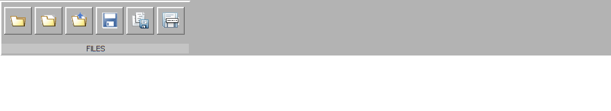
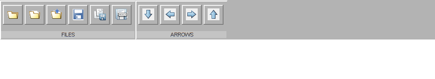
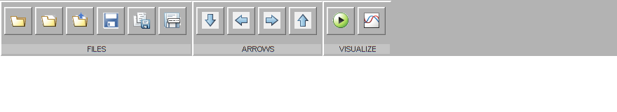
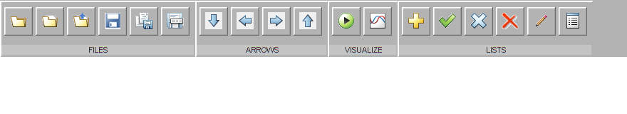

Toolstrip
Contents
Create the widget
f = figure(...
'Toolbar','none',...
'MenuBar','none',...
'NumberTitle','off',...
'Units','pixels',...
'Position',[100 100 880 160]);
movegui(f,[100 -100])
w = uiw.widget.Toolstrip(...
'Parent',f,...
'Visible','on',...
'Callback',@(h,e)disp(e),...
'Units','normalized',...
'Position',[0 0.5 1 0.5]);
Add a section
w.addSection('FILES');
w.addButton('folder_24.png','Folder');
w.addButton('folder_file_24.png','FolderFile');
w.addButton('folder_file_open_24.png','FolderFileOpen');
w.addButton('save_24.png','Save');
w.addButton('save_all_24.png','SaveAll');
w.addButton('save_as_24.png','SaveAs');

Add a section
w.addSection('ARROWS',4);
w.addButton('arrow_down_24.png','Down');
w.addButton('arrow_left_24.png','Left');
w.addButton('arrow_right_24.png','Right');
w.addButton('arrow_up_24.png','Up');

Add a section
w.addSection('VISUALIZE',1);
w.addButton('play_24.png','Play');
w.addButton('visualize_24.png','Plot');

Add a section
w.addSection('LISTS');
w.addButton('add_24.png','Add');
w.addButton('check_24.png','Check');
w.addButton('close_24.png','Close');
w.addButton('delete_24.png','Delete');
w.addButton('edit_24.png','Edit');
w.addButton('report_24.png','Report');
w.Parent = f;
w.Visible = 'on';
